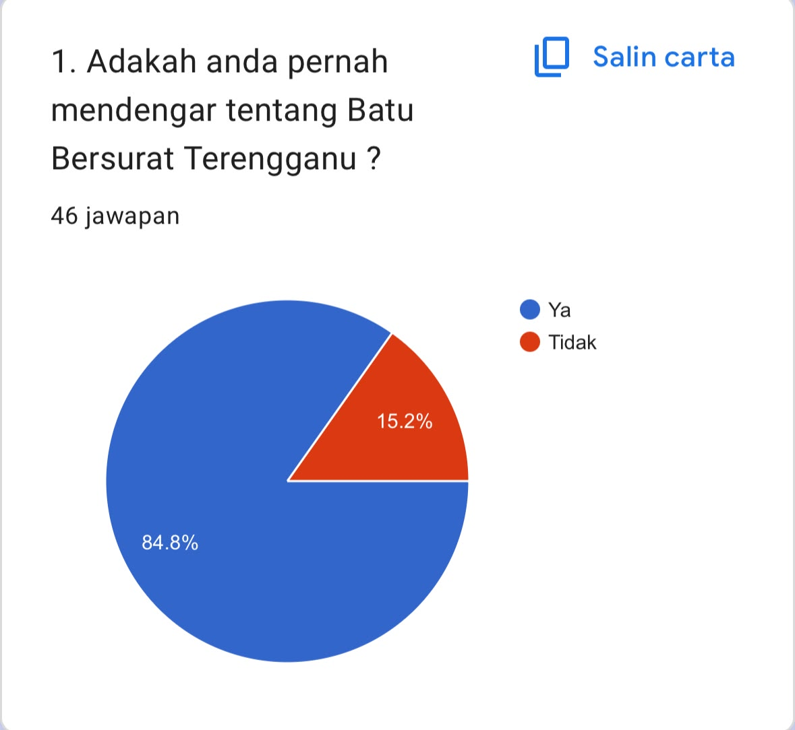
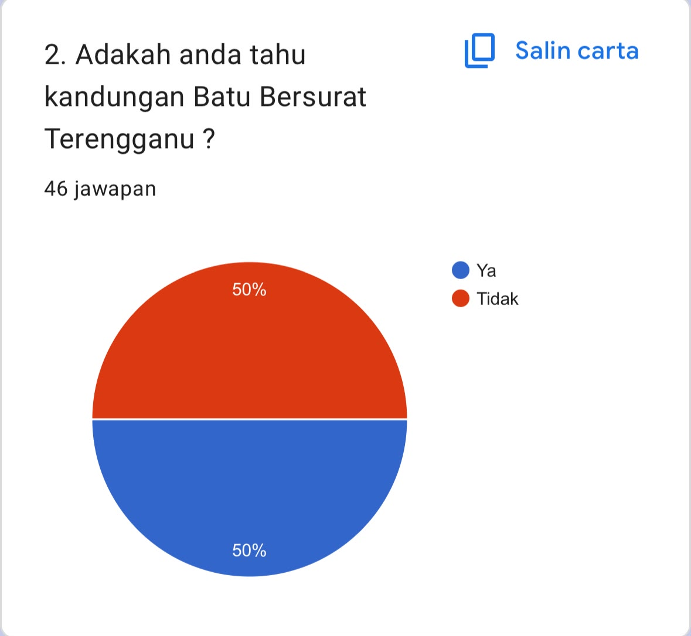
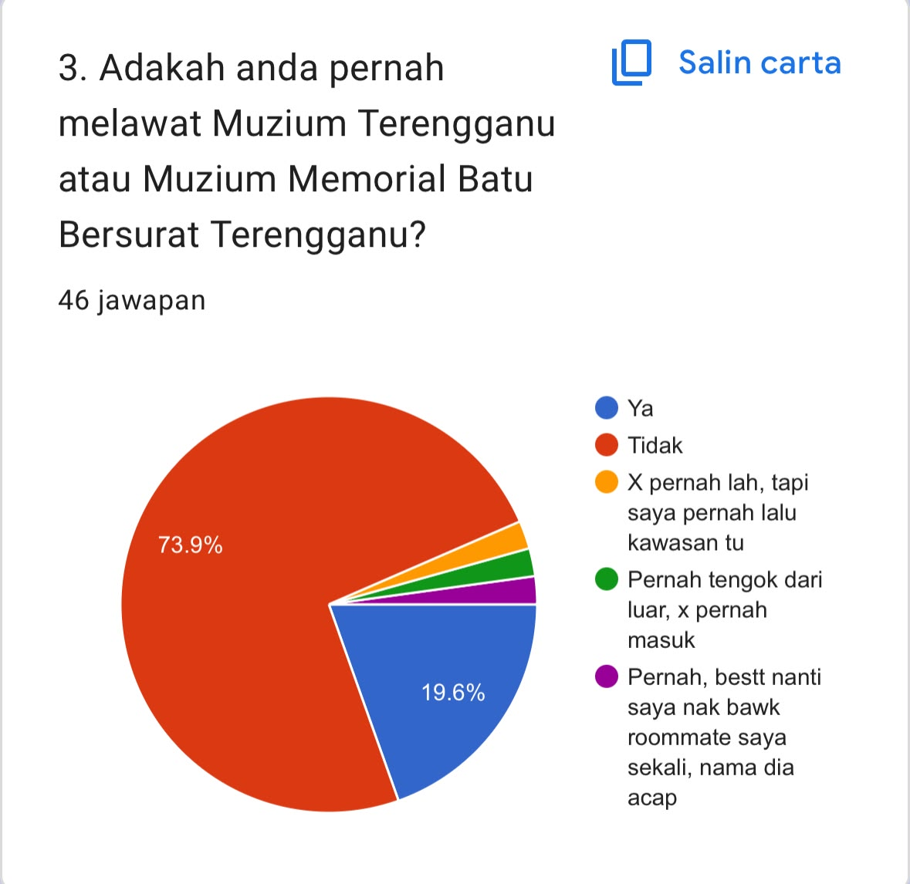

Soal Selidik Kesedaran Masyarakat
46
Jumlah responden
84.8%
Pernah mendengar tentang Batu Bersurat
50%
Tahu kandungan inskripsinya
19.6%
Pernah melawat muzium atau memorial



Tafsiran dapatan
Soal selidik ini dijalankan terhadap 46 orang pelajar Institut Pendidikan Guru (IPG) opsyen Sejarah melalui Google Form. Kumpulan ini dipilih kerana mereka merupakan bakal guru yang akan mengajar sejarah negara kepada murid di sekolah kelak.
Kesedaran tinggi, tetapi kefahaman terhad. Seramai 84.8% responden pernah mendengar tentang Batu Bersurat Terengganu, namun hanya 50% yang mengetahui kandungannya. Ini menunjukkan bahawa nama artifak ini sudah dikenali, tetapi kefahaman tentang isi inskripsinya, seperti hukum-hakam Islam, tarikh dan penggunaan tulisan Jawi, masih belum menyeluruh walaupun dalam kalangan pelajar yang mengkhusus dalam bidang sejarah.
Pendedahan secara langsung masih rendah. Hanya 19.6% responden pernah melawat Muzium Negeri Terengganu atau Memorial Batu Bersurat, manakala 73.9% tidak pernah. Faktor jarak dan kos perjalanan ke Terengganu berkemungkinan menjadi penghalang utama. Ini bermakna kebanyakan pengetahuan responden diperoleh melalui buku teks atau bacaan, bukan pengalaman melihat artifak itu sendiri.
Kaitan dengan isu dan cadangan. Dapatan ini menyokong isu kurangnya kesedaran dan kefahaman masyarakat yang dibincangkan dalam Bahagian C. Jika bakal guru sejarah sendiri belum memahami kandungan Batu Bersurat Terengganu sepenuhnya, maka usaha menyampaikan nilai warisan ini kepada generasi muda akan terjejas. Oleh itu, cadangan seperti pendigitalan, lawatan maya dan bahan pembelajaran interaktif dalam Bahagian D amat relevan untuk merapatkan jurang antara mengenali dan memahami artifak ini.